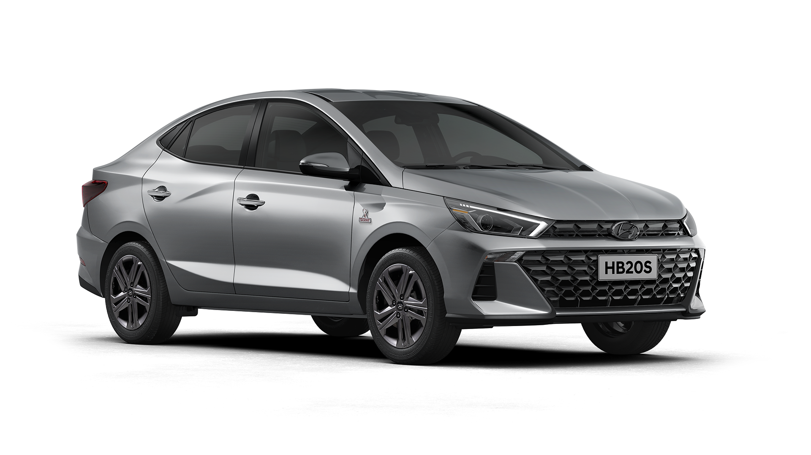

A Hyundai traz ao mercado automotivo brasileiro uma edição comemorativa para o maior evento esportivo do ano. O novo HB20 2023 série especial Copa do Mundo da Fifa Qatar 2022 chega disponível nas carrocerias Hatch e Sedã com itens especiais.

A série especial do HB20 2023 chega com diversos itens tecnológicos para entregar conforto e segurança aos clientes.
Estão integrados ao modelo a chave presencial Smart Key, estando incluídas a partida remota do motor pela chave nas versões TGDI
e a funcionalidade Smart Trunk, que permite a abertura do porta-malas por aproximação nos modelos sedãs.
Além disso, a série especial para a Copa do Mundo vem integrada com alerta de presença no banco traseiro,
vidros elétricos com função one touch, volante com regulagem de altura e profundidade, e iluminação no porta-luvas.
Como dito anteriormente, a série especial
está baseada nas configurações do modelo Comfort, mas com alguns
acréscimos de equipamentos de versões superiores.
Os destaques ficam por conta dos faróis com projetor e DRL em LED, as rodas de liga-leve com pintura exclusiva em cinza,
os retrovisores externos na cor cinza silk e o emblema do torneio nos para-lamas dianteiros.
Para as versões hatch, algumas exclusividades foram acrescentadas como o spoiler traseiro, reforçando a sensação de esportividade do carro.
A parte interna está equipada com painel de instrumentos digital Supervision Cluster e os bancos de couros chegam em duas cores com a logo da competição.
Além disso, os modelos chegam com detalhes cromados nas maçanetas e no botão de freio de mão, revestimento em couro
no console central e nos apoios de braço
lateral, além de dispor de duas entradas USB e sistema Bluemedia.
Estão integrados ao modelo a chave presencial Smart Key, estando incluídas
a partida remota do motor pela chave nas versões TGDI e a funcionalidade Smart Trunk,
que permite a abertura do porta-malas por aproximação nos modelos sedãs.
Além disso, a série especial para a Copa do Mundo vem integrada com alerta de presença no banco traseiro,
vidros elétricos com função one touch, volante com regulagem de altura e profundidade, e iluminação no porta-luvas.
O novo HB20 2023 série especial conta com duas versões com o motor 1.0 aspirado e câmbio manual de 5 marchas, além de outros dois
modelos com o propulsor 1.0 TGDI turbo com transmissão automática de 6 velocidades
Os modelos com o motor 1.0 aspirado entregam até 80 cv de potência com etanol
e 75 cv com gasolina, e torque máximo de 10,2 kgf.m (E) e 9,4 kgf.m (G).
Já as versões motorizadas com o 1.0 TGDI turbo alcançam 120 cv de potência com gasolina e etanol.
O torque máximo com esse motor é de 17,5 kgf.m com ambos combustíveis.
Em relação ao consumo de combustíveis, o HB20 2023 série especial com motor 1.0 aspirado apresenta os seguintes
números em km/l: 9,4 (E) e 13,2 (G) na cidade; 10,4 (E) e 14,8 (G) na estrada.
Os modelos com propulsor 1.0 TGDI apresentam os seguintes números:
8,3 (E) e 11,7 (G) na cidade; 9,9 (E) e 13,9 (G) na estrada.